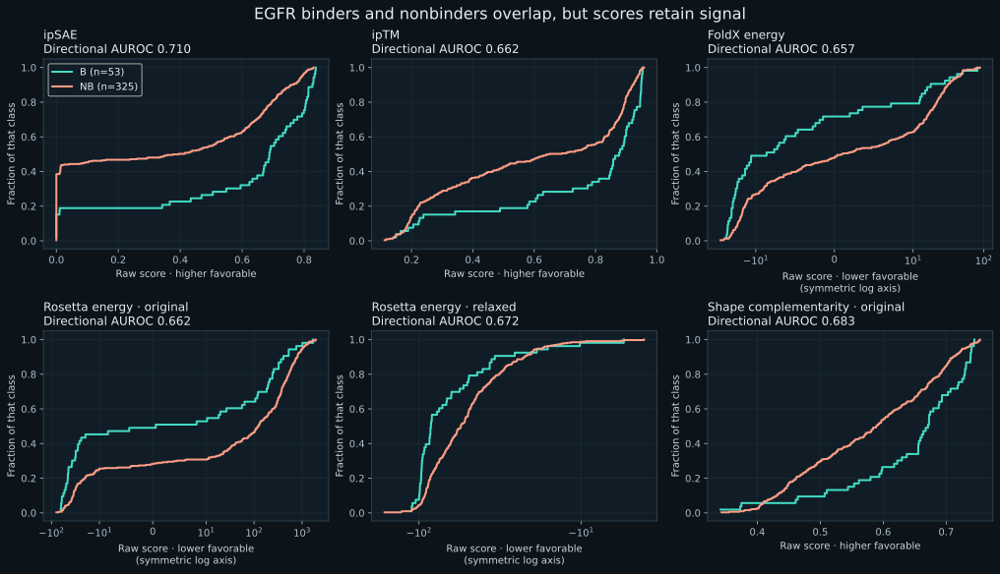
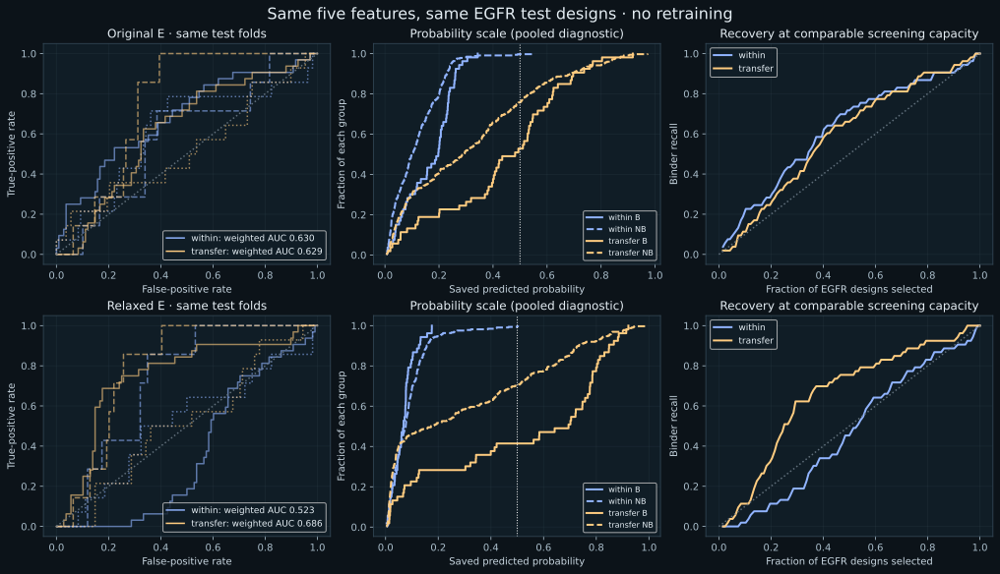
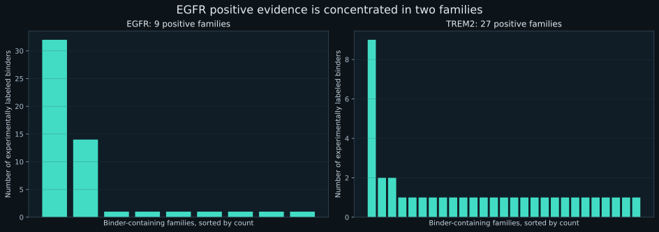

Higher recall is not always
better discrimination.
EGFR scores overlap between binders and nonbinders, but retain useful ranking information. For the original five-feature model, TREM2 training mostly changes which designs are selected; it does not improve the matched aggregate AUROC. The relaxed model shows a real descriptive ranking improvement.
1. Are EGFR binder and nonbinder scores similar?
They overlap substantially, but are not indistinguishable. EGFR median ipSAE is 0.688 for binders versus 0.395 for nonbinders. Their middle 50% ranges overlap: 0.469–0.799 versus 0.000–0.671. TREM2 has stronger confidence-score separation, while original Rosetta energy separates EGFR better than TREM2. The hypothesis does not hold equally for every metric.

| Raw measurement | EGFR AUROC | TREM2 AUROC | EGFR B median | EGFR NB median | EGFR 95% family-bootstrap interval |
|---|---|---|---|---|---|
| ipSAE | 0.710 | 0.828 | 0.688 | 0.395 | 0.585–0.895 |
| ipTM | 0.662 | 0.772 | 0.877 | 0.649 | 0.533–0.902 |
| FoldX energy | 0.657 | 0.608 | -8.628 | 0.974 | 0.519–0.778 |
| Rosetta energy · original | 0.662 | 0.570 | 0.563 | 120.658 | 0.577–0.755 |
| Rosetta energy · relaxed | 0.672 | 0.762 | -84.329 | -55.200 | 0.408–0.837 |
| Shape complementarity · original | 0.683 | 0.568 | 0.671 | 0.589 | 0.580–0.907 |
| Shape complementarity · relaxed | 0.642 | 0.580 | 0.663 | 0.608 | 0.491–0.901 |
| Interface H-bonds · original | 0.714 | 0.624 | 9.000 | 5.000 | 0.572–0.819 |
| Interface H-bonds · relaxed | 0.688 | 0.659 | 13.000 | 8.000 | 0.499–0.817 |
| Binder length (control) | 0.574 | 0.603 | 63.000 | 78.000 | 0.440–0.817 |
These are descriptive, full-cohort univariate AUROCs—not held-out logistic regression results. Confidence/shape scores are oriented higher-is-favorable; energies lower-is-favorable. Higher H-bond count and binder length are descriptive orientations only. Family-bootstrap intervals resample whole families and remain uncertain with just nine positive EGFR families.
2. Hold the model and EGFR test designs fixed
The original E model's recall rises from 0% to 47.2% at a probability cutoff of 0.5, while matched AUROC remains about 0.63. It selects 104 designs instead of one, and adds 79 false positives. This supports a change in operating point and score distribution, not a large aggregate ranking gain. Individual folds still differ.
| Coordinates | Training / testing | Matched AUROC | Recall at 0.5 | Precision at 0.5 | True binders found | False positives | Selected |
|---|---|---|---|---|---|---|---|
| Original | Train EGFR → test unseen EGFR families | 0.630 | 0.0% | 0.0% | 0 | 1 | 1/378 |
| Original | Train TREM2 → test EGFR | 0.629 | 47.2% | 24.0% | 25 | 79 | 104/378 |
| Relaxed | Train EGFR → test unseen EGFR families | 0.523 | 0.0% | 0.0% | 0 | 1 | 1/378 |
| Relaxed | Train TREM2 → test EGFR | 0.686 | 58.5% | 24.4% | 31 | 96 | 127/378 |
The relaxed E model is an important exception: matched AUROC increases from 0.523 to 0.686. A changed cutoff cannot explain that ranking difference, although it is a retrospective observation with limited family support.

Individual folds and all saved feature combinations
| Coordinates | EGFR fold | B / n | EGFR-trained AUC | TREM2-trained AUC | EGFR-trained AP | TREM2-trained AP |
|---|---|---|---|---|---|---|
| Original | 1 | 32/140 | 0.680 | 0.620 | 0.429 | 0.284 |
| Original | 2 | 7/116 | 0.587 | 0.750 | 0.086 | 0.125 |
| Original | 3 | 14/122 | 0.612 | 0.524 | 0.228 | 0.220 |
| Relaxed | 1 | 32/140 | 0.365 | 0.749 | 0.176 | 0.412 |
| Relaxed | 2 | 7/116 | 0.723 | 0.790 | 0.116 | 0.145 |
| Relaxed | 3 | 14/122 | 0.515 | 0.513 | 0.129 | 0.124 |
A=energy; B=energy+shape; C=energy+H-bonds; D=energy+shape+H-bonds; E=D+ipSAE+ipTM. Reference4=ipSAE+ipTM+FoldX+Rosetta energy. A–E/reference4/control models use the existing logistic fits. Raw energy is the unfitted favorable-direction score.
| Coordinates | Model | Training / testing | Matched AUC | Matched AP | Recall at 0.5 | Precision at 0.5 | Selected |
|---|---|---|---|---|---|---|---|
| Original | A | Train EGFR → test unseen EGFR families | 0.638 | 0.258 | 0.0% | — | 0/378 |
| Original | A | Train TREM2 → test EGFR | 0.638 | 0.258 | 0.0% | — | 0/378 |
| Original | B | Train EGFR → test unseen EGFR families | 0.654 | 0.339 | 0.0% | — | 0/378 |
| Original | B | Train TREM2 → test EGFR | 0.651 | 0.341 | 5.7% | 17.6% | 17/378 |
| Original | C | Train EGFR → test unseen EGFR families | 0.657 | 0.249 | 0.0% | 0.0% | 1/378 |
| Original | C | Train TREM2 → test EGFR | 0.664 | 0.244 | 71.7% | 23.0% | 165/378 |
| Original | D | Train EGFR → test unseen EGFR families | 0.623 | 0.250 | 0.0% | — | 0/378 |
| Original | D | Train TREM2 → test EGFR | 0.667 | 0.282 | 77.4% | 23.7% | 173/378 |
| Original | E | Train EGFR → test unseen EGFR families | 0.630 | 0.259 | 0.0% | 0.0% | 1/378 |
| Original | E | Train TREM2 → test EGFR | 0.629 | 0.214 | 47.2% | 24.0% | 104/378 |
| Original | reference4 | Train EGFR → test unseen EGFR families | 0.593 | 0.173 | 0.0% | 0.0% | 2/378 |
| Original | reference4 | Train TREM2 → test EGFR | 0.632 | 0.205 | 66.0% | 20.6% | 170/378 |
| Original | raw_energy | Train EGFR → test unseen EGFR families | 0.638 | 0.258 | N/A | N/A | N/A |
| Original | raw_energy | Train TREM2 → test EGFR | 0.638 | 0.258 | N/A | N/A | N/A |
| Original | length_control | Train EGFR → test unseen EGFR families | 0.641 | 0.266 | 0.0% | — | 0/378 |
| Original | length_control | Train TREM2 → test EGFR | 0.641 | 0.266 | 47.2% | 15.6% | 160/378 |
| Original | area_control | Train EGFR → test unseen EGFR families | 0.363 | 0.108 | 0.0% | — | 0/378 |
| Original | area_control | Train TREM2 → test EGFR | 0.512 | 0.174 | 79.2% | 14.3% | 294/378 |
| Relaxed | A | Train EGFR → test unseen EGFR families | 0.445 | 0.123 | 0.0% | — | 0/378 |
| Relaxed | A | Train TREM2 → test EGFR | 0.618 | 0.210 | 69.8% | 20.8% | 178/378 |
| Relaxed | B | Train EGFR → test unseen EGFR families | 0.458 | 0.125 | 0.0% | — | 0/378 |
| Relaxed | B | Train TREM2 → test EGFR | 0.623 | 0.212 | 67.9% | 21.2% | 170/378 |
| Relaxed | C | Train EGFR → test unseen EGFR families | 0.528 | 0.155 | 0.0% | — | 0/378 |
| Relaxed | C | Train TREM2 → test EGFR | 0.609 | 0.198 | 66.0% | 22.2% | 158/378 |
| Relaxed | D | Train EGFR → test unseen EGFR families | 0.508 | 0.143 | 0.0% | — | 0/378 |
| Relaxed | D | Train TREM2 → test EGFR | 0.612 | 0.200 | 66.0% | 22.3% | 157/378 |
| Relaxed | E | Train EGFR → test unseen EGFR families | 0.523 | 0.143 | 0.0% | 0.0% | 1/378 |
| Relaxed | E | Train TREM2 → test EGFR | 0.686 | 0.237 | 58.5% | 24.4% | 127/378 |
| Relaxed | reference4 | Train EGFR → test unseen EGFR families | 0.498 | 0.140 | 0.0% | 0.0% | 2/378 |
| Relaxed | reference4 | Train TREM2 → test EGFR | 0.659 | 0.208 | 83.0% | 20.8% | 212/378 |
| Relaxed | raw_energy | Train EGFR → test unseen EGFR families | 0.618 | 0.210 | N/A | N/A | N/A |
| Relaxed | raw_energy | Train TREM2 → test EGFR | 0.618 | 0.210 | N/A | N/A | N/A |
| Relaxed | length_control | Train EGFR → test unseen EGFR families | 0.641 | 0.266 | 0.0% | — | 0/378 |
| Relaxed | length_control | Train TREM2 → test EGFR | 0.641 | 0.266 | 47.2% | 15.6% | 160/378 |
| Relaxed | area_control | Train EGFR → test unseen EGFR families | 0.373 | 0.110 | 0.0% | — | 0/378 |
| Relaxed | area_control | Train TREM2 → test EGFR | 0.520 | 0.173 | 83.0% | 14.9% | 295/378 |
The source-selected precision rule does not transfer reliably
The TREM2-selected original-E cutoff is 0.0993. On EGFR it finds 46/53 binders (86.8% recall), but selects 275 designs, including 229 nonbinders: only 16.7% precision. The intended 50% validation precision floor is not achieved on this target.
| Coordinates | Evaluation | Feasible training folds | Policy coverage | Held-out recall | Held-out precision | Selected |
|---|---|---|---|---|---|---|
| Original | Within EGFR | 1/3 | 116/378 | Unavailable for full cohort | Unavailable for full cohort | — |
| Original | TREM2 → EGFR | 1/1 | 378/378 | 86.8% | 16.7% | 275/378 |
| Relaxed | Within EGFR | 0/3 | 0/378 | Unavailable for full cohort | Unavailable for full cohort | — |
| Relaxed | TREM2 → EGFR | 1/1 | 378/378 | 71.7% | 21.0% | 181/378 |
Unavailable within-EGFR policy results are not zero recall: some or all training folds could not find a nonempty selection meeting the 50% validation precision rule. The fixed 0.5 diagnostic above remains available for all 378 rows.
3. Does transfer find more binders for the same screening effort?
At approximately 20% capacity, both methods select 77 of 378 designs. Original E finds 16 binders with EGFR training versus 14 with TREM2 training. Relaxed E finds 6 versus 18. This reinforces the distinction: the original model's recall advantage disappears at this capacity; the relaxed transfer model retains an advantage.
| Coordinates | Training / testing | Budget per fold | Selected | Binders found | Recall | Precision | False positives |
|---|---|---|---|---|---|---|---|
| Original | Train EGFR → test unseen EGFR families | 10% | 39 | 12/53 | 22.6% | 30.8% | 27 |
| Original | Train EGFR → test unseen EGFR families | 20% | 77 | 16/53 | 30.2% | 20.8% | 61 |
| Original | Train TREM2 → test EGFR | 10% | 39 | 6/53 | 11.3% | 15.4% | 33 |
| Original | Train TREM2 → test EGFR | 20% | 77 | 14/53 | 26.4% | 18.2% | 63 |
| Relaxed | Train EGFR → test unseen EGFR families | 10% | 39 | 1/53 | 1.9% | 2.6% | 38 |
| Relaxed | Train EGFR → test unseen EGFR families | 20% | 77 | 6/53 | 11.3% | 7.8% | 71 |
| Relaxed | Train TREM2 → test EGFR | 10% | 39 | 6/53 | 11.3% | 15.4% | 33 |
| Relaxed | Train TREM2 → test EGFR | 20% | 77 | 18/53 | 34.0% | 23.4% | 59 |
Fixed exploratory 10% and 20% budgets were chosen for this diagnosis, after earlier test results had already been inspected. They are not preregistered study endpoints. We take the top ceil(budget × fold size) predictions within each saved test fold and retain complete tied-score blocks. Labels are used only to evaluate the resulting selections. These budgets are diagnostic examples, not replacements for the frozen 50% precision policy or test-selected optima.
4. Few independent positive families limit EGFR learning
EGFR's two largest positive families contain 32/128 and 14/62 binders. Those families also contain many nonbinders, so knowing the family does not solve the task. But when a family is held out, the model loses a large share of its positive evidence. One EGFR outer-training set has only two binder-containing families; its inner-training partitions each have only one.

Class prevalence also changes: 42.4% in the actual TREM2 training set versus 14.0% in the EGFR test set. The logistic models are unweighted. This can contribute to a changed probability scale, but different learned slopes, feature distributions and assays also change. These observations do not establish prevalence as the sole cause.
Inspect learned coefficients and training support
Saved standardized coefficients; no fits repeated. Positive energy coefficients mean the learned model reverses the physical lower-energy preference. Relaxed energy-only EGFR folds have coefficients +0.149, −0.478 and −1.006, illustrating family-dependent instability. Multifeature coefficients are conditional on other correlated inputs and are not causal effects.
| Coordinates | Model | Training source | Fold | Training B / n | Positive training families | Intercept | Standardized coefficients |
|---|---|---|---|---|---|---|---|
| Original | A | within | 1 | 21/238 | 8 | -2.403 | energy: -0.438 |
| Original | A | within | 2 | 46/262 | 2 | -1.577 | energy: -0.320 |
| Original | A | within | 3 | 39/256 | 8 | -1.832 | energy: -0.635 |
| Original | A | transfer | 1 | 36/85 | 26 | -0.309 | energy: -0.094 |
| Original | E | within | 1 | 21/238 | 8 | -2.483 | energy: -0.073 shape_complementarity: 0.168 interface_hbond_count: 0.150 original_ipSAE: 0.449 original_global_ipTM: -0.172 |
| Original | E | within | 2 | 46/262 | 2 | -1.734 | energy: -0.147 shape_complementarity: 0.313 interface_hbond_count: 0.691 original_ipSAE: 0.917 original_global_ipTM: -1.426 |
| Original | E | within | 3 | 39/256 | 8 | -2.182 | energy: 0.205 shape_complementarity: 0.678 interface_hbond_count: 0.591 original_ipSAE: 0.834 original_global_ipTM: -0.656 |
| Original | E | transfer | 1 | 36/85 | 26 | -0.654 | energy: 0.559 shape_complementarity: -0.545 interface_hbond_count: -0.004 original_ipSAE: 1.972 original_global_ipTM: 0.226 |
| Relaxed | A | within | 1 | 21/238 | 8 | -2.344 | energy: 0.149 |
| Relaxed | A | within | 2 | 46/262 | 2 | -1.619 | energy: -0.478 |
| Relaxed | A | within | 3 | 39/256 | 8 | -2.024 | energy: -1.006 |
| Relaxed | A | transfer | 1 | 36/85 | 26 | -0.374 | energy: -1.022 |
| Relaxed | E | within | 1 | 21/238 | 8 | -2.665 | energy: 1.159 shape_complementarity: -0.038 interface_hbond_count: 0.312 original_ipSAE: 0.950 original_global_ipTM: 0.212 |
| Relaxed | E | within | 2 | 46/262 | 2 | -1.686 | energy: 0.108 shape_complementarity: 0.007 interface_hbond_count: 0.426 original_ipSAE: 1.209 original_global_ipTM: -1.004 |
| Relaxed | E | within | 3 | 39/256 | 8 | -2.164 | energy: -0.409 shape_complementarity: 0.307 interface_hbond_count: 0.278 original_ipSAE: 0.673 original_global_ipTM: -0.316 |
| Relaxed | E | transfer | 1 | 36/85 | 26 | -0.612 | energy: -0.907 shape_complementarity: -0.339 interface_hbond_count: -0.343 original_ipSAE: 1.554 original_global_ipTM: -0.314 |
What this means for ProteinArena
Do not promote an evaluator based on recall alone. The EGFR overlap hypothesis is partly supported; sparse positive-family evidence and a more permissive transferred decision function are also important. Original E shows no matched aggregate ranking gain, while relaxed E shows a promising but uncertain transfer gain. Neither finding establishes a generally reliable arena judge.
The smallest next validation is to freeze a candidate evaluator and selection rule, then test genuinely new EGFR binder families. Use a separate calibration set if an EGFR-specific probability cutoff is needed, and evaluate once on an untouched family-held-out test set. More independent positive families are more informative than repeatedly refitting the same two dominant families. No new training or molecular jobs were started for this diagnosis.
Reproducibility and independent review
All 467 input rows and all existing results are unchanged. This report reads saved predictions and recomputes comparisons on identical EGFR test partitions. It performs no prediction, relaxation, model fitting, calibration or held-out threshold search. Cluster intervals use 1,000 family resamples with seed 42; they are descriptive and do not include model-training variability. The observed test sets have already been inspected, so this is exploratory analysis.
Two independent analyses and three reviewers checked the principal claims. This was a reduced review panel because the session's agent-creation limit prevented the full council workflow. Both analyses agreed on the numerical results; reviewers emphasized that similar aggregate AUROC does not imply identical rankings, and that class prevalence cannot be isolated as the cause. All three ranked Response B first for clearer handling of family support and confounding (mean rank B=1, A=2).
Computed diagnostics and saved prediction slices · Analysis script · Report builder · Independent numerical audit (1,601 checks)
Immutable source hashes
- inputs.json
1e2aefcfdde4be09b35bf8969a88e7c1869eefac315f4772fa4d33cb41d29c0d - results.json
f05d0491099f853e8d07668bb8ac75d47519cc4e78f05ce552fd4b1b3f8dc9b6 - protocol.json
3bd05ab864e00e641158ccf28093d3f35c63149da33b63d1ec26fbf7b0f93cba - outer_splits.json
138f346a60b0bcfc8d65567372f0e8eb55bf93585972fc7cbfced92ab22e649c - findings.json
9d1c51e9f88af57b9df860c0d8cf1cad74cce0623e8ac6f47e7fedddf397993e
Run: OMP_NUM_THREADS=1 OPENBLAS_NUM_THREADS=1 MKL_NUM_THREADS=1 /LOCAL_HOME/miniconda3/bin/python3 analyze.py
Then run build_report.py with the same Python runtime. Figures are available as SVG and PNG alongside this report.